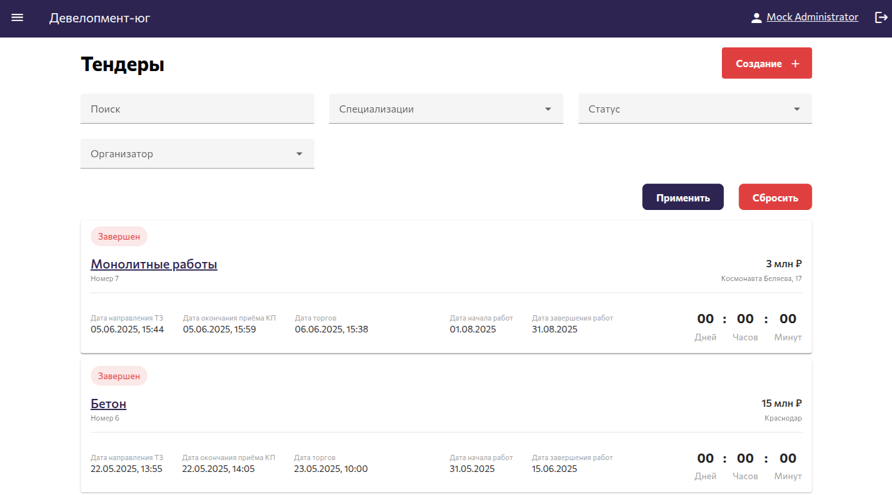
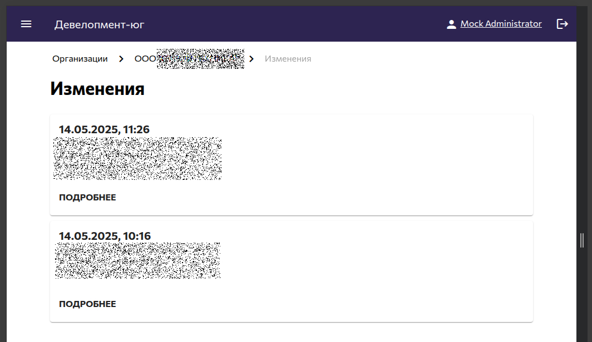
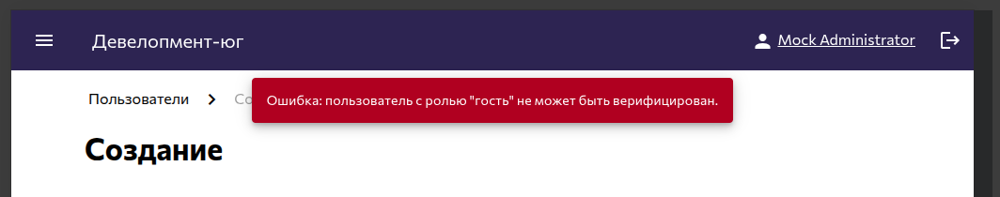
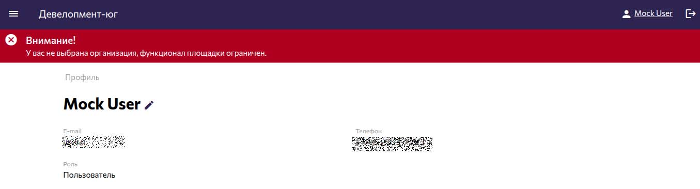
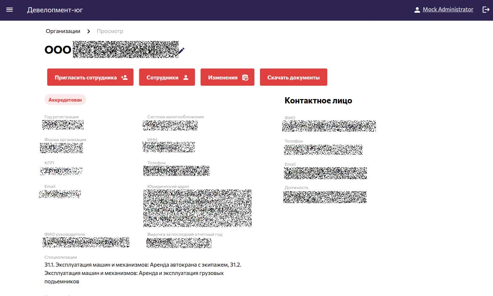
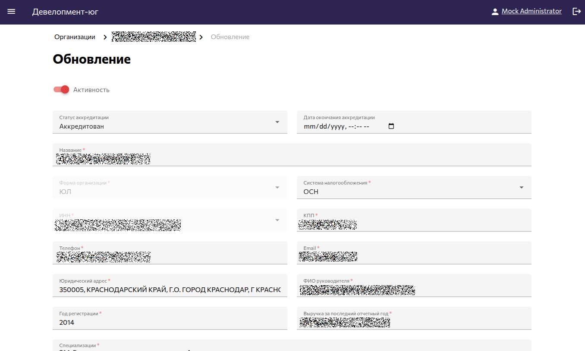
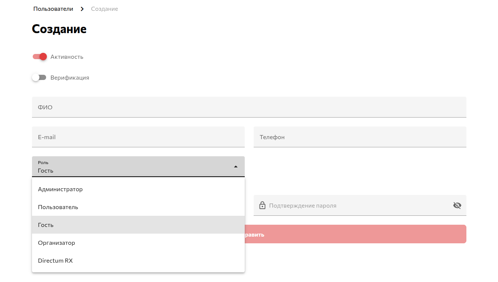
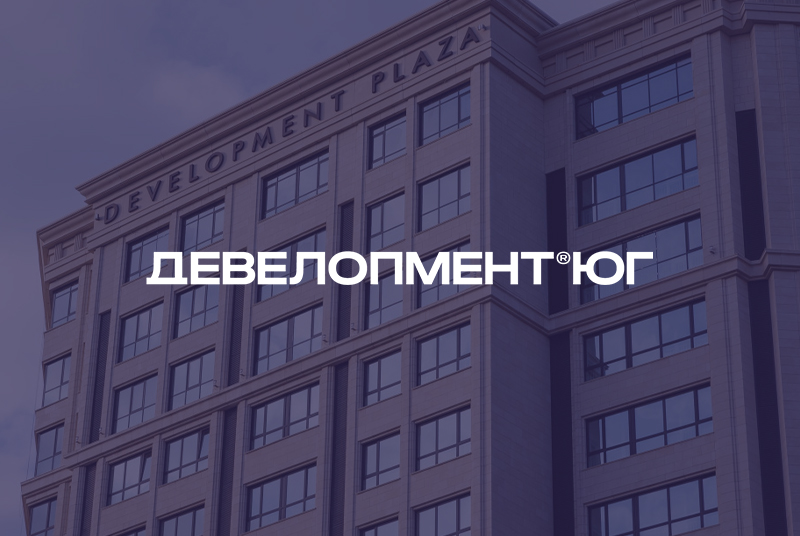

01
Оглавление
- Клиент
- Задача
- Аналитика
- Дизайн
- Используемый стек
- Серверная часть
- Клиентская часть
- Функциональность
- Заключение
Разработать электронную торговую площадку для проведения и администрирования тендеров корпорации «Девелопмент-Юг».

«Девелопмент-Юг» — одна из крупнейших строительных корпораций России с 30-летней историей и настоящий инициатор прогрессивных решений в сфере недвижимости. «Девелопмент-Юг» первой внедрила монолитно-каркасную технологию строительства, банковское проектное финансирование, новые форматы жилья: от smart-квартир до урбан-вилл и квартир с террасами.
Мы сотрудничаем с корпорацией уже несколько лет, и за это время успели реализовать ряд масштабных проектов. Среди них:
Создание электронной торговой площадки стало следующим этапом нашего сотрудничества.
Разработать внутреннюю торговую платформу для публикации тендеров, подачи предложений и взаимодействия с подрядчиками. Система должна поддерживать регистрацию организаций, аккредитацию, управление пользователями внутри компании и полный цикл работы с тендерами — от публикации до принятия решения.
У нас уже был опыт создания подобных платформ — в частности, электронной торговой системы для СК «Семья». Мы учли особенности внутренних регламентов «Девелопмент-Юг» и зафиксировали элементы, требующие доработки. Например, возможность зарегистрировать сразу несколько пользователей от одной организации и гибко управлять их правами доступа.
Базой для интерфейса стал проверенный стек Vuetify, который мы уже применяли в других системах. Мы адаптировали компоненты, сфокусировавшись на удобстве и предсказуемости взаимодействия.

В основе бэкенда используется наш привычный стек: Laravel + REST API, что позволило нам быстро развернуть стабильную архитектуру и сосредоточиться на бизнес-логике. Основные приоритеты — надежность и предсказуемое поведение системы при высокой нагрузке.
В проекте предусмотрена работа с разными видами очередей задач:
Чтобы сохранить прозрачность действий, любые изменения, связанные с организациями и пользователями, записываются в историю, доступную для просмотра в интерфейсе.

Проект упакован в Docker-контейнеры, что упростило деплой: мы подготовили образы, конфигурации и инструкции, и команда клиента смогла самостоятельно развернуть систему в своей инфраструктуре без необходимости глубоко погружаться в код.
Фронтенд построен на Nuxt 3 с UI-библиотекой Vuetify. Мы уже не раз использовали эту связку в проектах со сложным интерфейсом, например, в разработке CRM-системы для франшизы «Супермен».
Но сам по себе технологический стек — это еще не интерфейс. Мы много внимания уделили удобству и предсказуемости пользовательского пути, ведь не все, что очевидно разработчику, так же очевидно пользователю.
Эти и другие вопросы возникали регулярно. Поэтому мы доработали интерфейс:

Регистрация и доступ
Регистрация защищена Re-Captcha, требует подтверждения по email.
В зависимости от статуса аккаунта пользователю могут быть доступны или недоступны определенные функции — это всегда наглядно отображается в баннере в шапке.

Создание организации и аккредитация
Пользователь может создать организацию (на этом этапе будет доступен просмотр тендеров) и пройти аккредитацию (на этом этапе откроется доступ к формированию коммерческих предложений). Один пользователь может быть в нескольких организациях и переключаться между ними, оставаясь в системе.
Роли и права
Чтобы в системе могли работать несколько сотрудников от одной компании, мы реализовали удобный механизм приглашений.
— Пользователь, создавший организацию, автоматически становится ее владельцем
— Он может приглашать коллег по email — на указанный адрес приходит письмо с инструкциями для подключения
— Приглашенные сотрудники получают роль обычных участников: они могут участвовать в торгах, но не имеют доступа к настройкам организации
— Владелец может передать свои права другому сотруднику


Роли в системе
Администратор: полные права на управление: он может изменить или восстановить доступ любому пользователю; удалить неактуальные аккаунты; переназначить роль, если сотрудник уволился; вручную откорректировать коммерческое предложение.
Организатор: создает и публикует новые тендеры. Организаторам нельзя зарегистрироваться, эти аккаунты вручную заводятся через учетную запись администратора.

Интеграция с Directum RX
Для будущей интеграции с системой документооборота Directum мы предусмотрели техническую роль служебного пользователя. Через нее планировалось проводить аккредитацию и импорт существующих подрядчиков. Сейчас все процессы выполняются внутри площадки, но возможность импорта и аккредитации уже реализована — система готова к подключению при необходимости.
Система была разработана, протестирована и внедрена точно в срок. Теперь «Девелопмент-Юг» может управлять тендерами централизованно, приглашать подрядчиков, отслеживать предложения и управлять системой закупок через единую платформу. Благодаря тщательной проработке интерфейса и логики площадка удобна не только для организаторов, но и для участников — подрядчиков и партнеров корпорации.
«Девелопмент-Юг» создает среду, в которой людям действительно комфортно жить, и эффективная организация закупок — важная часть этого процесса. Мы ценим многолетнее сотрудничество и рады помочь в строительстве удобных цифровых решений, которые поддерживают надежность корпорации на всех этапах работы.
Спасибо, что прочли кейс! Если перед вами стоит похожая задача, напишите нам, обсудим.
